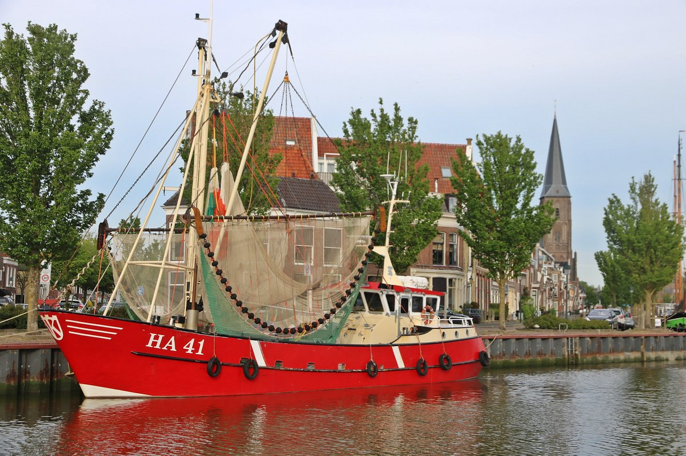

Harlingen


Wist je dat Harlingen een hele levendige en historische binnenstad heeft? Harlingen kreeg al in 1234 stadsrechten, en heeft als stad één van de hoogste monumentdichtheden van Nederland. Ons rijke verleden zie je dan ook terug in de aanwezigheid van de vele historische panden en gevels in het stadshart. De binnenstad van Harlingen kent prachtige straten, gevels, bijzondere winkels, gezellige kroegjes, en veel verschillende eetcafés en restaurants.

De naam ’t Havenmantsje is vermoedelijk ontleend aan een mechaniek van een mannetje dat met een hamer tegen de buitenkant van een klok sloeg. “Mantsje” is het Friese verkleinwoord van “man”. Het ontwerp van ’t Havenmantsje is van architect W.C. Metzelaar (1884-1918) die Rijksbouwmeester voor Justitie was. De klok bovenop het gebouw dateert uit 1562 en is afkomstig uit de in 1883 afgebroken Havenpoort van Harlingen. Van oorsprong is ’t Havenmantsje dus een gerechtsgebouw. Daarna heeft het gebouw verschillende ambtelijke functies gehuisvest en sinds september 2012 is ons restaurant hier gevestigd. In december 2016 is de serre aan het pand gerealiseerd.

In de buurt van de Zoutsloot waren de meeste zoutketen gevestigd. Straatnamen als Westerkeetstraat, Oosterkeetstraat, Zoutsloot en Zoutstraat verwijzen naar dit verleden. Aan de zeezijde van de Zoutsloot was een uitwatering. Door de ontdekking van het zout in Twente verdween de zoutindustrie uit Harlingen.

Na ruim 10 jaar werk (door vrijwilligers!) nadert het schip zijn voltooiing. Op dit moment wordt nog gewerkt aan de afwerking van de betimmering. Ook is men druk bezig met het naaien van de zeilen en het aanbrengen van de tuigage. Mogelijk kan eind dit jaar een eerste proeftocht gemaakt geworden.
Alle rechten voorbehouden.
Info afkomstig van
harlingenwelkomaanzee